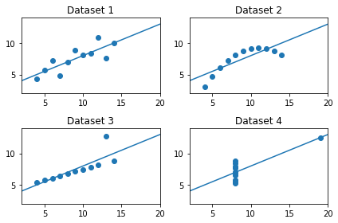

記述統計とグラフ¶
Anscombeのデータセット
4つのデータセット
それぞれ変数は
xとyの2つ
全てのデータセットで以下が殆ど同じ
xとyの平均（mean）xとyの標準偏差（standard deviation）xとyの相関係数（correlation coefficient）回帰線（regression line）
決定係数（coefficient of determination, \(R^2\)）
図示（散布図）すると大きく異なる
＜含意＞
データセットの質的な違いは記述統計だけでは確認できない。図示することが重要。
ここではmatplotlibに基づいたseabornパッケージを使う。このパッケージを使うことにより，matplotlibよりも簡単に，更により綺麗にできるようになる。
import numpy as np
import pandas as pd
import matplotlib.pyplot as plt
from statsmodels.formula.api import ols
Anscombeのデータセット
x1 = [10.0, 8.0, 13.0, 9.0, 11.0, 14.0, 6.0, 4.0, 12.0, 7.0, 5.0]
y1 = [8.04, 6.95, 7.58, 8.81, 8.33, 9.96, 7.24, 4.26, 10.84, 4.82, 5.68]
x2 = [10.0, 8.0, 13.0, 9.0, 11.0, 14.0, 6.0, 4.0, 12.0, 7.0, 5.0]
y2 = [9.14, 8.14, 8.74, 8.77, 9.26, 8.10, 6.13, 3.10, 9.13, 7.26, 4.74]
x3 = [10.0, 8.0, 13.0, 9.0, 11.0, 14.0, 6.0, 4.0, 12.0, 7.0, 5.0]
y3 = [7.46, 6.77, 12.74, 7.11, 7.81, 8.84, 6.08, 5.39, 8.15, 6.42, 5.73]
x4 = [8.0, 8.0, 8.0, 8.0, 8.0, 8.0, 8.0, 19.0, 8.0, 8.0, 8.0]
y4 = [6.58, 5.76, 7.71, 8.84, 8.47, 7.04, 5.25, 12.50, 5.56, 7.91, 6.89]
df1 = pd.DataFrame({'x':x1, 'y':y1}) # Dataset 1
df2 = pd.DataFrame({'x':x2, 'y':y2}) # Dataset 2
df3 = pd.DataFrame({'x':x3, 'y':y3}) # Dataset 3
df4 = pd.DataFrame({'x':x4, 'y':y4}) # Dataset 4
散布図
ax1 = plt.subplot(221) # ax1に図の座標の情報を挿入
plt.scatter('x', 'y', data=df1)
plt.xlim(2,20) # 横軸の表示範囲
plt.ylim(2,14) # 縦軸の表示範囲
plt.title('Dataset 1')
plt.subplot(222, sharex= ax1, sharey=ax1) # ax1の座標と同じに設定
plt.scatter('x', 'y', data=df2)
plt.title('Dataset 2')
plt.subplot(223, sharex= ax1, sharey=ax1) # ax1の座標と同じに設定
plt.scatter('x', 'y', data=df3)
plt.title('Dataset 3')
plt.subplot(224, sharex= ax1, sharey=ax1) # ax1の座標と同じに設定
plt.scatter('x', 'y', data=df4)
plt.title('Dataset 4')
plt.tight_layout() # レイアウトを見やすく調整
pass
平均
df_list = [df1, df2, df3, df4]
for df in df_list:
print('x:',df['x'].mean(), ' ', 'y:',df['y'].mean())
x: 9.0 y: 7.500909090909093
x: 9.0 y: 7.50090909090909
x: 9.0 y: 7.5
x: 9.0 y: 7.500909090909091
標準偏差
for df in df_list:
print('x:',df['x'].std(), ' ', 'y:',df['y'].std())
x: 3.3166247903554 y: 2.031568135925815
x: 3.3166247903554 y: 2.0316567355016177
x: 3.3166247903554 y: 2.030423601123667
x: 3.3166247903554 y: 2.0305785113876023
相関係数
for df in df_list:
print(df.corr().iloc[0,1])
0.81642051634484
0.8162365060002428
0.8162867394895981
0.8165214368885028
回帰直線の係数の推定値
b0hat = [] # 切片の推定値を入れる空のリスト
b1hat = [] # スロープの推定値を入れる空のリスト
for df in df_list:
mod = ols('y ~ x', data=df).fit() # OLSの推定
b0hat.append(mod.params[0]) # 空のリストに推定値を追加
b1hat.append(mod.params[1]) # 空のリストに推定値を追加
print('b0:',mod.params[0], ' ', 'b1:',mod.params[1])
b0: 3.0000909090909085 b1: 0.5000909090909091
b0: 3.0009090909090905 b1: 0.5
b0: 3.0024545454545453 b1: 0.49972727272727285
b0: 3.0017272727272752 b1: 0.49990909090909075
回帰直線の図示
xx = np.linspace(2,20,100) # 回帰直線を描くための横軸の値
ax1 = plt.subplot(221)
plt.plot(xx,b0hat[0]+b1hat[0]*xx) # 回帰直線
plt.scatter('x', 'y', data=df1)
plt.xlim(2,20)
plt.ylim(2,14)
plt.title('Dataset 1')
plt.subplot(222, sharex= ax1, sharey=ax1)
plt.plot(xx,b0hat[1]+b1hat[1]*xx) # 回帰直線
plt.scatter('x', 'y', data=df2)
plt.title('Dataset 2')
plt.subplot(223, sharex= ax1, sharey=ax1)
plt.plot(xx,b0hat[2]+b1hat[2]*xx) # 回帰直線
plt.scatter('x', 'y', data=df3)
plt.title('Dataset 3')
plt.subplot(224, sharex= ax1, sharey=ax1)
plt.plot(xx,b0hat[3]+b1hat[3]*xx) # 回帰直線
plt.scatter('x', 'y', data=df4)
plt.title('Dataset 4')
plt.tight_layout()
pass

決定係数
for df in df_list:
mod = ols('y ~ x', data=df).fit()
print('R^2:',mod.rsquared)
R^2: 0.666542459508775
R^2: 0.6662420337274844
R^2: 0.6663240410665593
R^2: 0.6667072568984653